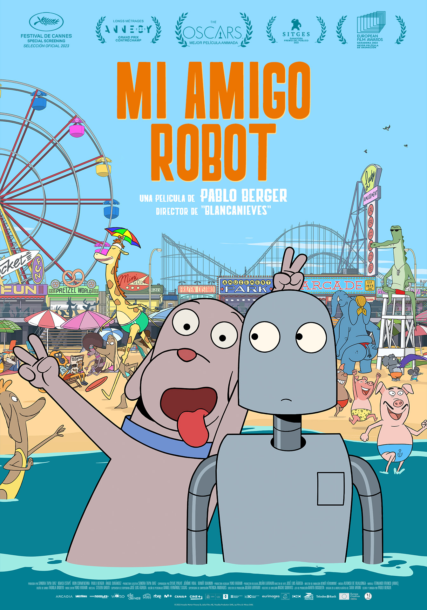
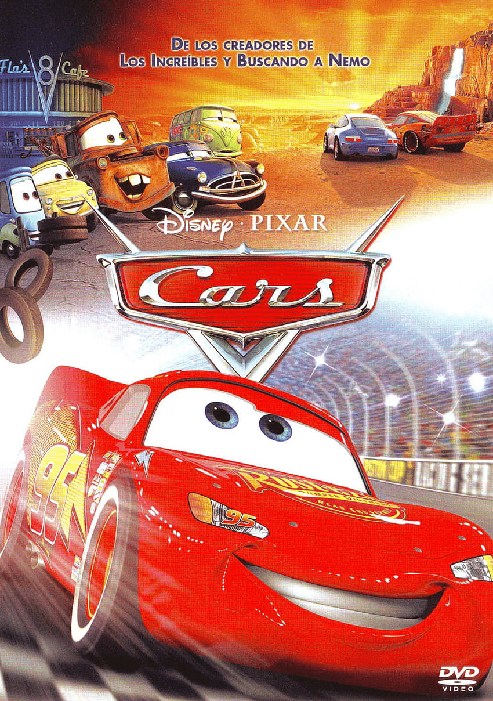
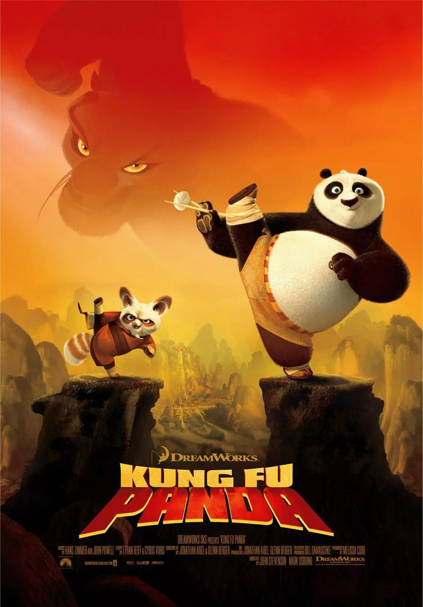

Robot Dreams (2024)

"Robot Dreams" es una película de animación sin diálogos que relata
la emocionante y compleja relación entre un perro y un robot en la
Nueva York de los 80. Basada en la novela gráfica de Sara Varon, la
película explora temas de amistad, separación y el sentido de
pertenencia a través de un estilo visual evocador y lleno de
emotividad.
Esta es una pelíucla que aunque reciente, se ha convertido en una de
mis películas favoritas, ya que siento que transmite de muy buena
forma un gran mensaje sobre lo que es la amistad. También, es una
película diferente a lo que estamos acostumbrados al no tener
diálogos, lo que la hace tener una gran presencia y un peso
importante en la animación, la cual, también es muy buena.
Cars - La Saga

La saga "Cars" de Pixar, inicia con la historia de Lightning
McQueen, un audaz auto de carreras que descubre el valor de la
comunidad y la verdadera amistad en el pequeño pueblo de Radiator
Springs. A lo largo de las películas, McQueen enfrenta nuevos retos
deportivos y personales, explorando diferentes culturas y amistades
alrededor del mundo, ofreciendo valiosas lecciones sobre humildad,
respeto y crecimiento personal.
- Película original: Cars (2006)
- Secuela: Cars 2 (2011)
- Tercera parte: Cars 3 (2017)
Esta película se posisiona entre mis favoritas, ya que representa mi
etapa de niñez, es la primer película de la que tengo recuerdos
presentes, y de la primera que recuerdo tener en estima.
Curiosamente, aunque siempre me ha gustado Cars, nunca me han
gustado o llamado la atención los autos de la vida real.
Kung Fu Panda - La Saga

"Kung Fu Panda" es una saga que sigue las aventuras de Po, quien se
transforma de un torpe fanático del kung fu en el Guerrero Dragón. A
través de sus enfrentamientos con villanos que amenazan la paz del
Valle de la Paz, Po crece no solo en habilidad sino también en
sabiduría. La serie destaca temas de autoaceptación, la búsqueda del
conocimiento y la importancia de la familia, tanto biológica como
elegida.
"El ayer es historia, el mañana es un misterio, pero el hoy es un
regalo. Por eso se llama presente." - Maestro Oogway
Kung Fu Panda se posisiona entre mis películas favoritas, ya que es
una saga que siempre he disfrutado en familia, principalmente, mi
papá que es muy fan. Además, considero que es cine, la considero
como una trilogía practicamente perfecta, en la que nuestro héroe
pasa por todas sus etapas desde la concepción de un héroe, hasta la
madurez y la aceptación de su pasado y su destino.